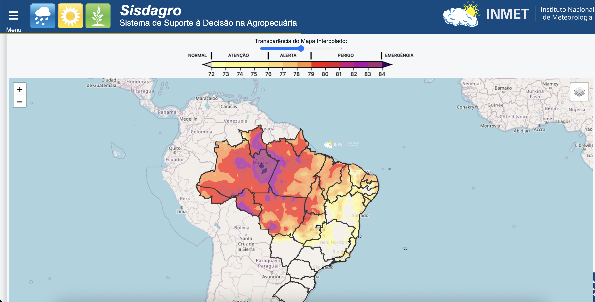

Mobile
React Native · TypeScript · JavaScript · Android · iOS · desenvolvimento multiplataforma
DESENVOLVEDOR MOBILE SÊNIOR · JOÃO PESSOA, BRASIL
Desenvolvedor Mobile Sênior | React Native | TypeScript | Android e iOS
Engenharia mobile que transforma código em produtos de forma ágil, escaláveis e que geram resultados.
01 / 07
Construindo interfaces e sistemas digitais desde 2013.
02 / 07
SOBRE
Mais de 6 anos criando aplicações Android e iOS com React Native, TypeScript e JavaScript.
Atuo em todo o ciclo mobile: concepção de MVPs, prototipação, arquitetura, implementação, testes, publicação e suporte nas lojas. Trabalho com Produto, Backend, QA e Design para transformar requisitos complexos em experiências estáveis, acessíveis e fáceis de evoluir.
03 / 07
STACK & MÉTODO
React Native · TypeScript · JavaScript · Android · iOS · desenvolvimento multiplataforma
React Navigation · linking · deep linking · Context API · Zustand · Redux · MMKV · integração nativa
Jest · Testing Library · testes de UI · análise de renders · performance · code review · Design System
REST APIs · Firebase · Python · Salesforce · ZegoCloud · Google Colab · IA Generativa · RAG
04 / 07
TRABALHO SELECIONADO
Alguns capítulos da minha trajetória entre desenvolvimento mobile, arquitetura e design de produto.


FINTECH · REACT NATIVE
Atuação no core do app nas verticais de Recargas e Gift Cards, evoluindo jornadas financeiras, componentes reutilizáveis e integrações REST.

SISTEMA · PYTHON · MAPAS
Desenvolvimento de parte relevante do backend em Python do Sisdagro, sistema de suporte à decisão agropecuária do INMET, com integração para exibição de mapas meteorológicos e cálculos para análise de risco.


PRODUTO · UI DESIGN
Protótipos mobile de alta fidelidade, fluxos de usuário e um Design System criado para dar consistência e velocidade ao produto.
05 / 07
EXPERIÊNCIA
Desenvolvedor Mobile Sênior III
Dashboard de telemetria em tempo real para o INMET, com React Native, TypeScript, backend em Python, Context API e Zustand.
Especialista II e Desenvolvedor Mobile
Módulos críticos para Android e iOS, design system e solução de logística com Google Maps, geolocalização, rotas e APIs REST.
Especialista II
Fluxos de Recargas e Gift Cards com foco em usabilidade, estabilidade, performance, Redux, análise de renders e testes com Jest e Testing Library.
Analista Sênior
Liderança técnica na migração de Ionic para React Native, MVP HealthTech, deep linking, integração Salesforce e publicação nas lojas.
06 / 07
ANTES DO CÓDIGO
Além da experiência profissional, mantenho uma formação multidisciplinar entre tecnologia, jogos digitais, produto e prototipação com IA.
Pós-Graduação em Jogos Digitais · Faculdade Idez
Sistemas para Internet · UNIPÊ / Análise e Desenvolvimento de Sistemas · IESP
IA aplicada · UX/HITSS · Agile/Scrum · React Hooks · Soul Crystal · LABTRANSP
07 / 07
CONTATO
Se o desafio envolve produto digital, mobile e uma boa dose de cuidado, me conte sobre ele.